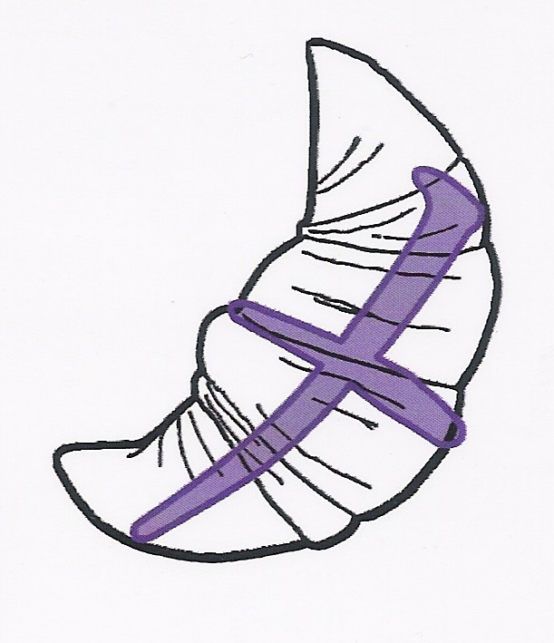

El Katakana es un silabario japonés usado normalmente para representar palabras de origen extranjero. Por ejemplo la palabra computadora en japonés se pronuncia konpyūtā y se escribe con katakana: コンピューター
Esta aplicación tiene las 45 silabas que componen el katakana a modo de "cartas" o "fichas". Cada ficha tiene la sílaba junto con un dibujo que hace referencia a como se pronuncia. La diferencia entre estas fichas y otras similares es que la relación fonética entre el kana y el dibujo es en español.
Por ejemplo el kana para "me" (メ) es representado por una medialuna:

Hay que tener en cuenta que la relación es solo de pronunciación en español, y no hay que hacer asociaciones de significado entre el dibujo y el kana.
Para usar el programa, desde el menú de inicio seleccione "Ordenado" para ver las fichas ordenadas según el silabario japonés o seleccione "Al azar" para ver las fichas sin ningún orden. Al tocar una ficha podrá ver un cartel con su pronunciación. Toque en la cruz superior derecha o fuera del cartel para que desaparezca.
Basado en las cartas de Kyoren Argentina
Software Libre bajo licencia MIT. Código fuente disponible en Github
Autor: Sebastián Bassi y Maximo Bassi